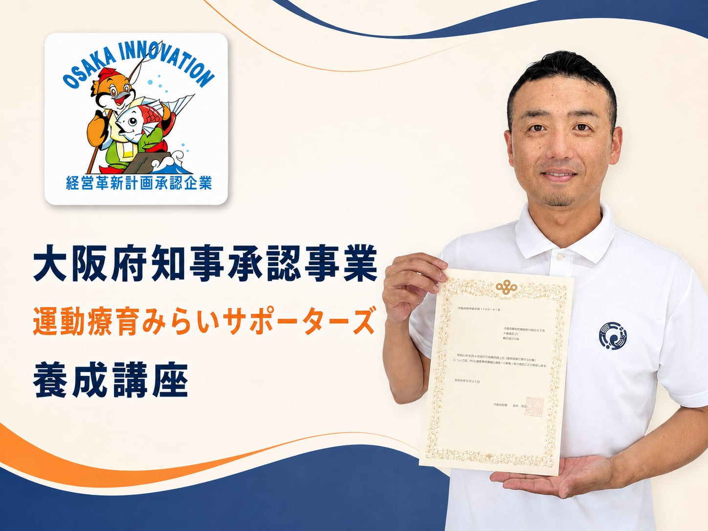

01
体系的に学べる
講座
発達・評価・感覚・運動・支援まで、現場で役立つ知識を整理します。
知識を増やすだけで終わらせない。
子どもの発達と運動を「見立て、伝え、実践する」力を身につけ、現場で選ばれる支援者へ。

みらいサポーターズは、運動療育の専門性と実践を広げる新しい学びの場として、子どもたちの未来のために、信頼と実績のあるプログラムを提供します。

運動療育みらいサポーターズは、子どもの発達と運動を「見立て、伝え、実践する」支援者を育てるオンラインアカデミーです。
発達・評価・感覚・運動・支援まで、現場で役立つ知識を整理します。
学んで終わりではなく、現場で使うための実践へつなげます。
同じ志を持つ支援者と、悩みや学びを分かち合えます。
支援を強みにし、その先の仕事・事業の選択肢まで広げます。
知識だけでなく、子ども・保護者・事業所と向き合ってきた現場の経験を、学びの土台にしています。
運動療育さとやま代表・谷河慎介が、現場で使える視点をお伝えします。
自身が運営する施設で積み重ねた、現場から生まれた実践知があります。
保護者へ支援の意図を伝え、信頼をつくる力も大切にしています。
運動療育をより多くの現場へ届けるため、書籍でも発信しています。
「支援できる」から、「仕事にできる」「事業として回せる」へ。目指す未来に合わせて伴走します。
実践コース
支援に自信を持ちたい方へ
運動療育を実践できるようになる
キャリアコース
自分の力で稼ぎたい方へ
運動療育を自分の仕事にする
事業デザインコース
事業を伸ばしたい法人・経営者の方へ
運動療育事業を事業として回す
開催日・時間帯・費用などは、あなたの目標と現在地を伺いながら個別にご案内します。
最短4ヶ月で、現場で使える力を身につけます。
オンライン・対面、どちらの学び方もご相談いただけます。
目指すコースに合わせて、個別相談でご案内します。
お申し込みの方へ、講師の著書をプレゼント。
期間・形式・費用などの詳細は、個別相談であなたの目標や状況を伺いながらご案内します。無理な勧誘はありません。
LINEで個別相談の詳細を受け取る